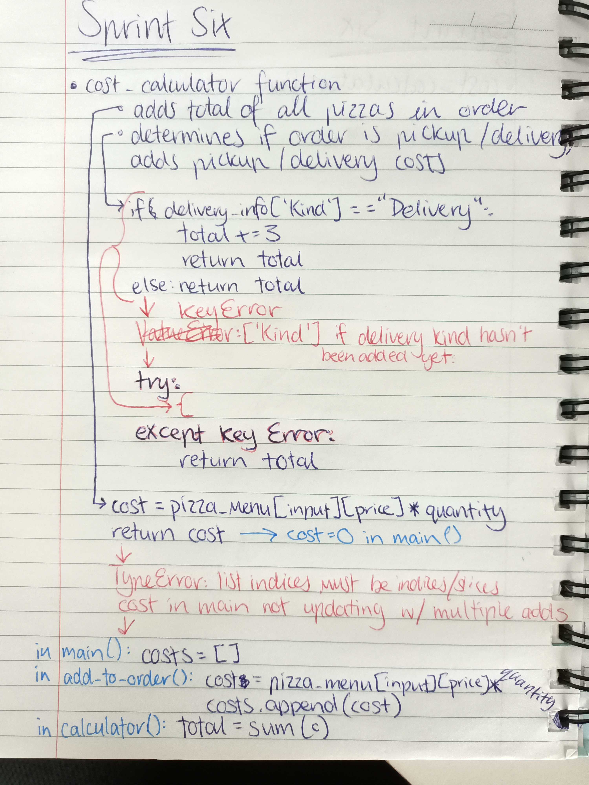
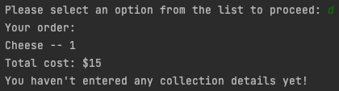
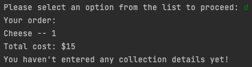

Brief
This is a program where a worker at a pizza company may enter orders received over the phone into a computer system. This system will store a customer's name, address, and order information, and use this to calculate a price total and print a receipt.
Below is the initial project backlog:

Sprint One
Aim
This is the first sprint of the program - this aims to add a simple pizza menu, and have the start of a main function that welcomes the user and prints that menu.
Planning

Test
This shows a successful test, where items off the menu are printed alongside their prices.
Reflection
This version has a simple menu that I can work with during the early stages of this project, as well as the beginning to the main loop that will allow the program to run; these elements all work as expected, which can be seen by the screenshot of the outcomes in the testing. Next steps will be to allow the program operator to enter their choice of the pizza, which must be stored by the program.
Sprint Two
Aim
In this sprint I am implementing the start of the "order" function. The menu will be printed, and the user is asked to enter the pizza they would like, along with a quantity and order comments. An order_list will also be created, which the information the user enters will be added to.
Planning


Test
This shows the code working as planned: the menu prints, the user is able to interact with the system and ask for what they want, and the order information printed at the end shows that that information is successfully stored by the program.
Reflection
The program now takes a user's order and stores it in the system, and is able to recall it later
when asking for the user's confirmation. As I was writing the code in this sprint, it occurred to me
that I hadn't actually planned to include an option where the operator could edit the order after
initially entering it. This would mean the program is very inflexible and the operator would have to
start again from scratch if he made a mistake. Therefore, I have updated the project backlog and
plan to create another function that allows the user to edit the order. I probably won't implement
this in the next sprint, but will instead wait until the receipt and delivery/pickup functions
have been added.
In the next version, I want to add a function where where the operator asks whether the customer
wants their food delivered to their home address or not, then asks for and processes the relevant
personal information (e.g. name, address, phone number, delivery charge).
There are a few problems with this version - the formatting on the printed lists is not as clean
as it could be, and of course it still can't cope with any kind of unexpected input. I plan to
address all of these minor issues when I have finished writing the main code.
Sprint Three
Aim
This sprint aims to add a "get_customer_info" function that will find out if the order is for pickup or delivery, and ask for customer information based on that (name, address, etc.) and adds a delivery charge if appropriate.
Planning


Tests


These tests show the get_customer_info function working correctly, with different information being requested based on whether they want their order delivered or picked up.
Reflection
The program now allows the user to tell it whether they would like their order to be
delivered, or if the customer will pick it up from the pizza store themselves. The program then
takes the customer's personal information based on this, and adds a $3 delivery charge where
appropriate.
As we can see from the testing, currently the code runs in a linear fashion - calling one function
after the other and not giving the user the option of going back to change something or choose which
information they want to enter first. In the next sprint I want to restructure the code so that the
program is based around a "menu" of options from which the user can decide what to do with their
order. I believe
this will allow for greater flexibility within the program, so the user has more control. It will also
make it easier to edit user orders, a function which I plan to implement in my next sprint.
Sprint Four
Aim
This sprint aims to restructure the program by making all of the code run from a central options
menu which the user interacts with. This makes the program more predictable for the user, and it is
easy for them to "retrace their steps" if they would like to change anything about their order.
It will also add functions for validating user input (integers and strings), which will
prevent the program from crashing so easily by making the program feed back to the user if they
make mistakes like exceeding the character length or entering the wrong type of character.
Finally, it will allow the user to view their receipt and edit what they have ordered.
Planning

Planned menu attributes
Reflection
In this sprint, I completely restructured my code so that it was centred around a central menu,
from which the user can make requests. This means that the program is more predictable and easier
for a first-time user to navigate. I also added in several new functions, including two
functions for validating user input to prevent crashes, and greatly altered the function for
getting the customer information, so that it detects when the user already has information stored
and allows them to edit it more efficiently. I have split the get_customer_info function into
four separate functions (get_delivery_info, get_pickup_info, and get_address) to make this part of
the process as efficient as possible.
However, the original goal of this sprint has not been completed. I came across problems with the
print_menu functionality early on, which was a major component of my plans for the edit_order
function. I then realised that I was too ambitious with early planning for this sprint and decided
to change my focus to troubleshooting, fixing bugs, implementing simple validation functions, and
updating the edit_customer_info function so that it had a more flexible design, elements of which
I plan to reuse in the edit_order function.
In this program the user is still unable to delete things from the order or view their receipt.
The delay in implementing these functions is due to the problems with the print_menu functions,
which are currently not working. In the next sprint, I will fix this, which should allow me to
implement the previously-planned edit_order function I had intended to add in this sprint.
Once sprint five has been completed, I will be able to start fixing any final bugs and getting the
program ready for completion.
Testing

This screenshot shows the new structure of the program in action - a main menu is printed from which the user can access all of the program's capabilities. When a function finishes, they return to the main menu.

In this screenshot we see the get_integer and get_controlled_string validation functions working. When the user tries to enter a non-integer, or something that is below or above the character limit, they are notified and are asked to enter their information again.

This test shows the unplanned update to the get_customer_info function that was implemented in this sprint to take advantage of the new validation functions. If the user has already entered information into the system, the system now recognises that and allows for the realistic possibility that the user has only made one or two mistakes in their address, so they now do not have to re-type every detail of their address. This makes interactions with the program less frustrating for the user.
Sprint Five
Aim
In this sprint, I want to have a working print_receipt function. This means that I will need to fix the broken print_menu and print_menu_indices functions, which are currently returning errors when called in several situations and early tests of the print_receipt function. Once this is done I will use this code to implement a very simple confirm_order function.
Planning


Errors
At the start of this sprint, I planned to write a very simple, short print_receipt function using of the existing print_menu function. The print_receipt function could then be included in a more complex confirm_order function, which was the main goal of the sprint. However, the print_menu function I had planned on using returned a somewhat mangled output (as seen below) when used with my lists. Eventually, I decided the best way to collect delivery/pickup information would be using a dictionary, and modified the program accordingly. Switching the format of one list to a dictionary also meant that I had to create another function for printing dictionaries, as well as restoring the original print_menu function.


Tests

After the print_menu and print_dict functions had been created, I was able to implement the print_receipt and confirm_orders more or less as planned; we see them working in the test screenshots above. However, we can also see that my changes have created a new bug in the code.
Reflection
This sprint was successful as far as fulfilling my goals was concerned. I now have working functions
for printing both dictionaries and multi-dimensional lists, and working print_receipt and
confirm_order functions. The extensive testing process after this version also allowed me to identify
several bugs both minor and major, such as the way the user's address was being recorded - many of
the minor bugs have now been fixed.
There are three remaining major flaws in the code. After the changes made in this sprint, it appears
that the total_cost variable does not update according to the information from the add_to_order
loop - something that had worked in previous versions (the error discovered in this version's testing is
pictured above. I am unclear how this happened; however, I will
not be fixing it in this sprint, as I plan on dealing with the cost calculation in a new way altogether
going forward, so it would be a wasted effort.
On top of this, there is a possible exploit where a user could get $3 off their order total by entering
the "edit customer details" menu, and changing their order to "pickup" an unlimited amount of times.
While this could be prevented, it would require writing repetitive code, whereas I believe a better
solution would again be calculating costs through a separate "calculator" function, so that the
total is not constantly passed through arguments and altered by 3-4 different functions. This will
make it much easier to edit code pertaining to it in the future. This will be addressed in the next
sprint.
The other issue is shown in the second test image - if a user orders the same kind of pizza
twice, it will not print as, for example, "2 cheese pizzas" but as two sets of "1 cheese pizza".
This will create an inconvenience for the user when I implement the planned "edit_order" function -
therefore, this will have to be fixed in the next sprint, before the edit_order function is added.
Sprint Six
Aim
In this sprint, I am aiming to implement a "cost calculation" function, which will change the way the program calculates the user's total for the order. This will prevent the problems that have been caused by changes to the delivery method (which requires the $3 delivery charge to be added or removed). I am also planning a "quantity calculator" function, so that the receipt prints all pizzas ordered of a certain kind together (e.g. 2x Hawaiian instead of printing 1x Hawaiian twice.) These functions are necessary for the smooth implementation of the planned edit_order function.
Planning



Test

This test shows the cost-calculating function working correctly, and appears to show the quantity-adder function working as well.
Reflection
The cost calculation and "quantity_adder" function have both now been successfully implemented, and the goals of this sprint have been completed. I had to trial several different methods, particularly in order to make my calculator function work. Eventually, I decided to create a "costs" list that would be updated from inside the add_to_order function - this would contain the prices of all items ordered from the menu (by adding the result of quantity ordered * unit cost to the cost list). However, when the "total" needs to be calculated, the program will call the cost_calculator function which determines if the $3 delivery fee is applicable and adds it to the total. The total only needs to be calculated at three points in the code, so this solution - of having the total individually calculated at each of these points - is more efficient than writing repetitive code to prevent exploits such as those explained in the Sprint 5 reflection. The quantity_adder function also appears to be working in the tests, which means that both the major flaws that could have caused problems with the edit_order function (as well as decreased the strength of the program in general) have been fixed. Therefore, in Sprint Seven I will be able to implement the final planned menu function, edit_order, where the user can remove items from their pizza order.
Sprint Seven
Aim
In this sprint, I want to add an edit_order function that will allow the user to delete items from their pizza order.
Planning

Tests
 

Reflection
The screenshotted tests above show the edit_order function working successfully. The user can choose
which menu item they want to remove and how many of that item they will be removing. Once all the
units of a certain pizza have been removed that pizza is removed from the order list entirely
(shown in the first test photo with Hawaiian pizza) instead of remaining visible with a quantity of 0.
These steps have been taken in order to avoid annoyance or confusion for the user and increase the
program's usability.
As can be seen from the project backlog below, all of this program's
original goals have been achieved at the end of this sprint. Therefore the final testing process
can now begin.
Program goals
Sprint Eight
Aim
After the conclusion of Sprint Seven, I thought that my program was finished - however, during final testing an outside user discovered that my quantity_adder function didn't actually work at all, and only appeared to because my testing wasn't comprehensive enough (I tested it by ordering multiple cheese pizzas, "cheese" being the first item on the menu. However, the code produces the below output if you attempt to order multiple of any item on the menu, other than the first one.). This clearly needs to be fixed, and I plan to have a working alternative to the quantity_adder function by the end of this sprint.
Error
Planning

Tests

Final test (outside user)
Reflection
The testing above shows that the sprint's goals have been successful. I was thankfully able to reuse most of my original quantity_adder code; only two lines had to be modified to fix the bug, as identified in the paper plan, and the "updated" boolean was also inserted to make the program more efficient, in that it identifies quickly whether or not there is an existing quantity in the order list to be altered, or if the new order can just be appended as normal. After the main work of the sprint was completed, I asked an outside user to test my code; after reviewing the footage and listening to her feedback, I was able to identify two minor problems that I have also fixed as part of the work on this final sprint. ((1) The add_to_order function previously allowed the user to order a nonexistent eleventh menu item, due to my use of len(pizza_menu) as the given maximum for their input (which meant they could enter "10" when they should only have been able to enter numbers 0-9. This was fixed to prevent the program from crashing in this scenario. (2) There were two minor typos in user feedback throughout that have now been taken out to avoid confusion from the user.
Further information
To create this program, I used the AGILE development method. That meant following the core principles of documentation and modelling. I started the project by creating a rough to-do list in the form of a kanban board (the project backlog) and divided the work into "sprints" based on each element of this project backlog. This helped me to prioritise, especially in the early stages of my program, and helped me to construct a linear and logical path towards a complete program - with basic functionality coming before complicated embellishments. This made my code very flexible and all changes to the design could be easily performed. Before each sprint I defined my aims, created another kanban board, and then a rough plan for how I envisioned the code to be laid out. This helped me to remain efficient during a sprint and undoubtedly sped up my work. All updates to the code were tested in a separate file specifically intended for testing before being integrated into the main code document, so as to avoid setbacks if the new code didn't integrate as well as planned; comprehensive testing should also make the theoretical user experience better, as by fully testing the program after each sprint I or other testers were able to catch and fix many small errors or even identify major design flaws as they continued to cause problems throughout the development process. Finally, the practice of writing a reflection or sprint review after each sprint was completed allowed me to improve the quality of future sprints by analysing my own mistakes. Overall, the use of the AGILE development method greatly increased my productivity, my efficiency, and the overall quality of my work. My use of Github was an essential part of maintaining my dedication to this method - regular commits after each sprint made keeping track of my progress much easier, and through it I was able to complete my reflections as well as the kanban board and plans. Below is a screenshot of my commits for sprints one through seven.
Git commit history

Relevant Implications Summary
Future proofing
"Future proofing" means that this program will continue to be flexible and easy to work with well into the future. It means the code is easy to update and expand upon, and easy to understand for any new developer who may potentially come to work on it. To address this, I have tried my best to keep the structure of the program simple and easy to follow. All code runs out of a main function, with a central menu. All functions and variables are sensibly named and the code has been thoroughly commented, so that all of it is explained. This makes it easy to come back to or look at for the first time and understand what's happening. The code has been run through a PEP8 online checker, which checks that my code follows all standard conventions for the Python language; as the screenshot immediately below reveals, these conventions have been met. This confirms that my code will be easy to read and understand for anyone familiar with Python. Finally, my use of Github and Agile processes mean that I - and anyone with access to my notes - have a detailed record of this program's design and potential weaknesses.
Functionality
"Functionality" means that the program functions as it should, without crashes or glitches. To address this I have personally tested the program every time I added or altered code, performed a formal test after each sprint, and documented the most important tests on this document. I have also asked other people not familiar with the project to test it for me, which resulted in the discovery of several places where the code crashed unexpectedly, as well as the identification of barriers to usability. It is my belief that there are no longer errors or glitches in my code - I have created several validation functions specifically designed to combat these glitches, which have been well documented throughout the planning process.
Usability
"Usability" means that a program is easy to use to somebody unfamiliar with its workings. That means it is easy to navigate, interact with, and understand. I believe my program complies with this heuristic due to the extensive validation as well as the way it is laid out. The program is predictable, running from a central menu that the user returns to after each completed task. The user is provided with clear instructions and every step. If they do something wrong, a feedback message is printed that clearly explains what they have done wrong and what they must do to fix it. They are also given a chance to fix their own mistakes, and are usually asked to "please try again" after they have entered something the system cannot process. The program also takes advantage of the Python functions .lower(), .upper(), and .title() to make sure the user doesn't have to worry about simple things like capitalising their input. The code has also been tested by somebody unfamiliar with my code who identified typos that have now been removed, as well as giving feedback on the usability; after performing revisions based on his advice I am confident my program provides clear feedback and instructions even for a first-time user, and is free of typos that may interfere with understanding.